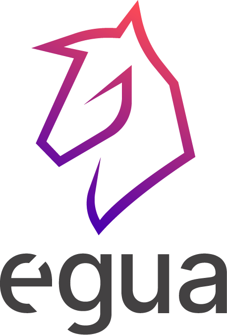
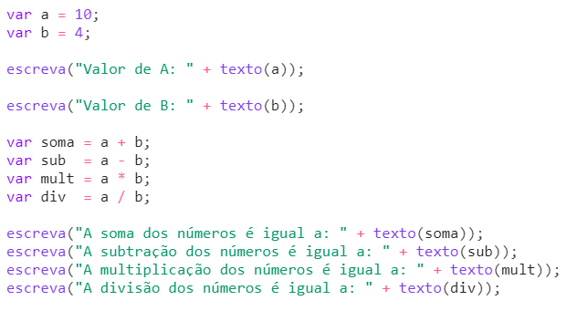

Égua (2020)
Égua é uma linguagem de programação moderna e simples, totalmente brasileira. Ela foi criada por Lucas Pompeu e seus amigos da faculdade em abril de 2020. O código é totalmente em português.
Ela foi criada para descomplicar o aprendizado em programação para pessoas que não sabem inglês ou não têm familiaridade. Cada objeto é desenvolvido em JavaScript. Sua primeira versão foi lançada em 2019.

Em resumo, a Linguagem Égua é uma linguagem de sintaxe simples, derivada da língua brasileira, com o objetivo de quebrar as barreiras da linguagem para pessoas que desejam aprender a programar.
Atividade desenvolvida como extensão no projeto
PACEX/Mundo Tech do curso de análise e Desenvolvimento de Sistemas
Unipar - Cascavel